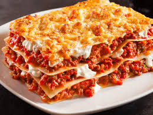

Lasagna Recipe

Description
Lasagna, pasta dish of Italian origin, made with broad often ruffled noodles and a tomato or white sauce. Lasagna, in the singular, is a southern Italian variation of what northern Italians call lasagne, in the plural.
Ingredient
- lasagna noodles
- ground beef
- onion
- garlic
- olive oil
Steps
- Heat the olive oil:
- In a large skillet or saucepan, heat 2 tbsp olive oil over medium heat.
- Sauté the Onion:
- Add the chopped onion and cook for about 3–5 minutes, until softened and translucent.
- Add the Garlic:
- Stir in the minced garlic and cook for 30 seconds to 1 minute, just until fragrant (don't let it burn).
- Cook the Meat:
- Add the ground beef (or beef/pork/sausage mix).
- Break it apart with a spoon and cook until browned all the way through (about 5–7 minutes).
- If there’s excess fat, drain it off carefully.
- Season (optional step):
- Add salt, pepper, and any seasonings you like (e.g., Italian seasoning, paprika, red pepper flakes).
- Continue with Sauce (if desired):
- If you have tomato sauce or crushed tomatoes, add them now and simmer for 20–30 minutes for a rich meat sauce.
Home